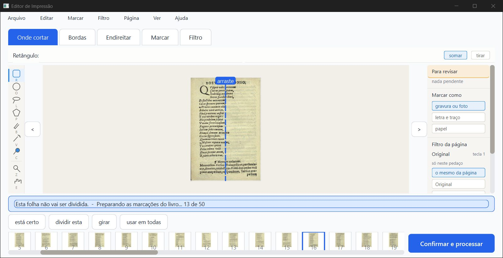
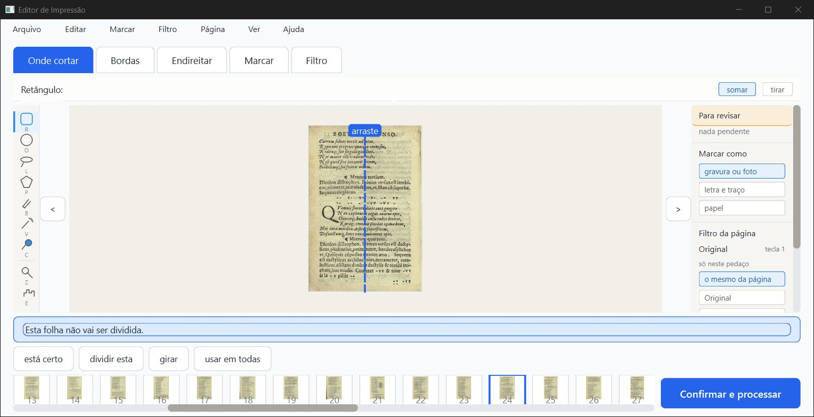
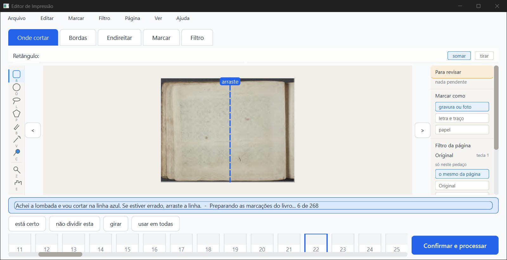
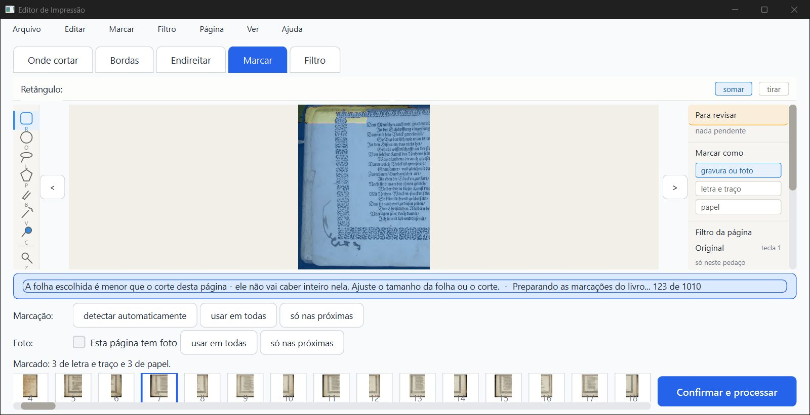
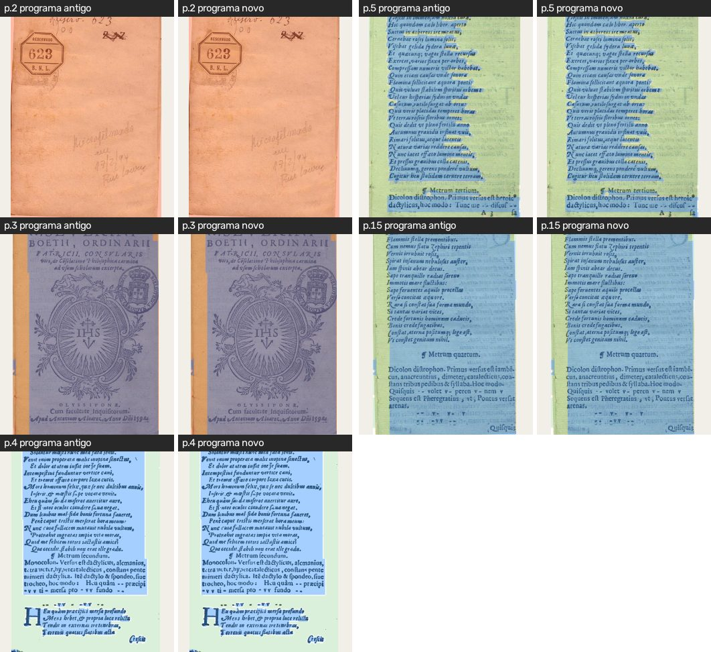
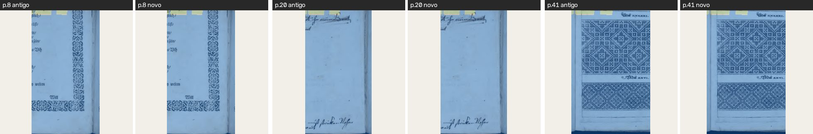
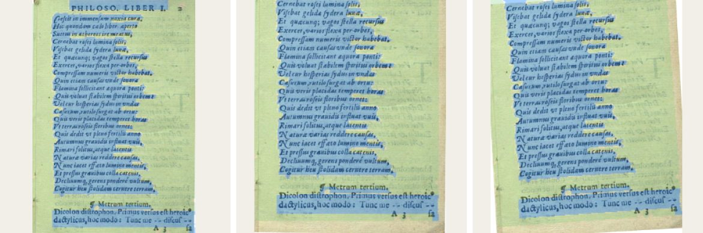
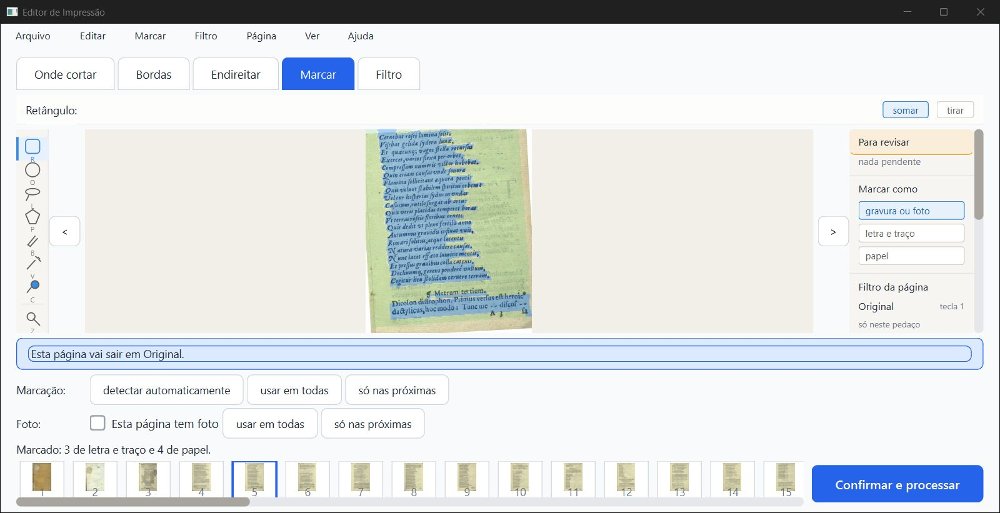

PRONTO PARA CONFERIR. As zonas de um projeto antigo aparecem no mesmo lugar, a conversão roda por trás com o andamento na faixa e some no fim, o PDF sai idêntico e o programa antigo continua vendo as zonas. Não é "aprovado": só o Samuel marca. Há três ressalvas: uma travada de 6 s na janela durante a conversão de um livro grande, a cópia de segurança que não é idêntica bit a bit, e uma cópia de segurança a mais quando se alterna com o programa antigo.
O que foi conferido: o ramo fase2-geometria (worktree geometria), bdeb31c, com o D2 (7cb56c1) e o Z1 (b) (47b30f9, b0c4f0b, bdeb31c), por cima do fase-1 juntado em 87430dd. Nenhum código foi mudado. Os projetos reais em %LOCALAPPDATA% não foram abertos. Tudo rodou numa pasta de dados de teste própria (verificador/dados/), com cópias feitas por git archive:
bdeb31caab746f, o que a tarefa pediu7e1ee21, o fase-1 sem D2, que entra no 87430ddPara a janela, uma instância minha de 1600×821 px (1280×657 pontos), fora da tela, pilotada só com mensagens nativas e fechada com WM_CLOSE.
Defeito conhecido (decisão do Samuel, 28/09): a moldura dourada e a iluminura continuam sendo defeito conhecido da Fase 1. Este item não mexe em imagem.
| Item | Como | Resultado |
|---|---|---|
| pytest (por partes, um arquivo por vez) | máquina | 1396 passaram, 59 pularam, 0 falhas (~22 min somados). Os 59 que pularam são de OCR e precisam de dados fora do git (saida_teste/ocr-*, motor do Kraken); não têm a ver com este item. Os testes novos test_zonas_na_folha.py + test_converter_zonas_ao_abrir.py deram 37 de 37. |
teste_botoes.py (numa cópia git archive, com saida_teste própria) |
máquina | 132 ações, 0 falhas |
| Faixa "Preparando as marcações do livro... N de M" e ela sumir no fim | olho + máquina | Funciona. No Boécio (50 páginas) aparece "0 de 50 … 45 de 50" e some em ~9 s. No Siebmacher (268 páginas, folhas divididas) aparece "0 de 268 … 266 de 268" e some em ~112 s. |
| A janela responde durante a conversão (clique, troca de página) | máquina + olho | Responde, com uma ressalva. Cliquei ">" a cada leitura e a página andou sempre (Boécio: páginas 15 a 23; Siebmacher: folhas 21 a 134). Resposta típica de 0,1 a 0,5 s. Mas no Siebmacher a janela ficou 6 s ou mais sem responder uma vez, e isso se repetiu nas duas rodadas (ver ressalva R1). |
| As zonas no mesmo lugar (antigo × novo) | olho + máquina | Sim. As zonas lidas pelo código novo são idênticas (diferença 0,0) às do projeto antigo, nas 50 páginas do Boécio e nas 268 do Siebmacher. Nos prints, as bordas das zonas coincidem. A única diferença nos prints é o desenho das letras, que vem dos consertos da fase-1 (a p.4 é Mágico pro), e não das zonas. |
Cópia de segurança projeto.antigo-zonas-na-folha-*.json feita uma vez |
máquina | Uma vez por conversão. O Boécio ganhou 1 cópia e, depois de fechar no meio e reabrir, não ganhou outra. Ganha mais uma se o programa antigo regravar o projeto entre uma abertura e outra (ver ressalva R3). |
| A cópia é idêntica ao antigo | máquina | Idêntica no conteúdo, não bit a bit (ressalva R2). As zonas, os cortes e os filtros são iguais. A única diferença é a linha "geometria_das_zonas": null acrescentada em cada página. |
| PDF gerado idêntico ao do código antigo | máquina | Idêntico. Boécio: as imagens das 50 páginas são iguais byte a byte entre o antigo (aab746f), o fase1 (7e1ee21), o novo a partir do projeto antigo e o novo a partir do projeto convertido. Siebmacher: 268 de 268 iguais (fase1 × novo convertido). O md5 do arquivo inteiro muda por causa da data gravada no PDF. |
| Fechar no meio da conversão e reabrir: continua e termina | máquina | Sim. Mandei WM_CLOSE com a faixa em "18 de 50" e o programa fechou em ~2 s. No disco ficaram 30 páginas convertidas e 20 por converter. Ao reabrir apareceu "0 de 20", depois "10 de 20", e terminou com 50 de 50. Nenhuma cópia de segurança nova. |
| Mudar corte e ângulo de uma página com zona | olho | A zona continua sobre o mesmo pedaço da folha. No Boécio p.5, puxei a borda de cima para baixo (aba Bordas) e depois girei +3,2° (aba Endireitar). As zonas azuis continuam nas mesmas linhas de verso, inclinadas junto com o texto (imagem abaixo). |
| Desfazer / refazer | máquina + olho | Funciona. Com 4× Ctrl+Z a página volta ao corte e ângulo automáticos, e as zonas voltam ao lugar de antes (diferença de 8 milionésimos da página, ~0,02 ponto a 300 DPI). Com 4× Ctrl+Y tudo volta exato. |
Abrir o projeto convertido no programa antigo (aab746f, Z2) |
olho + máquina | As zonas aparecem, inclusive na p.5 com corte e +3,2° feitos no programa novo: as zonas estão nas linhas certas. Quando o antigo grava, volta ao formato antigo com as mesmas zonas (diferença 0,0). |
| Faixa azul em 1280×657 | olho | Cabe em uma linha. O texto mais longo de verdade, "Achei a lombada e vou cortar na linha azul. Se estiver errado, arraste a linha. - Preparando as marcações do livro... 6 de 268", ocupa ~2/3 da faixa e não empurra nada. Também testei o maior aviso que existe (122 letras) mais o andamento "123 de 1010", colocado por mim na faixa só para ver o tamanho: coube em uma linha e chegou a ~90% da largura. |

Boécio, a faixa durante a conversão: "Esta folha não vai ser dividida. - Preparando as marcações do livro... 13 de 50".

Depois da conversão: a faixa volta ao texto normal.

Siebmacher em 1280×657: o texto mais longo de verdade, em uma linha só.

O maior aviso que existe mais o andamento, colocado por mim na faixa: ainda em uma linha.

Boécio, aba Marcar, programa antigo × programa novo (p.2, 3, 4, 5, 15): as zonas no mesmo lugar em todas.

Siebmacher (folhas divididas), p.8, 20 e 41: as zonas no mesmo lugar. Diferença de pixels na p.8: 0. Na p.20 e na p.41 só há diferenças fracas (até 20 níveis) dentro da textura, nenhuma na borda das zonas.

Boécio p.5, da esquerda para a direita: antes, com o corte mudado, e com corte mais 3,2°. As zonas azuis continuam nas mesmas linhas de verso. A faixa de baixo que entrou com o corte novo fica fora da zona, como deve, porque não fazia parte dela.

O programa ANTIGO abrindo o projeto convertido, p.5 com corte e ângulo feitos no novo: as zonas estão nas linhas certas.
Abri um por um os 60 prints da pasta prints/, alguns em folhas-resumo de 6. Sete prints saíram com a tela inicial em vez da conferência, todos tirados logo depois de trocar de tela (boecio1_faixa_1, fechar_no_meio_faixa_1, reabrir_continua_faixa_1, sieb1/2_faixa_1, antigo_01_aberto, sieb_sem_conversao_miniaturas). É um atraso de pintura da janela fora da tela, não defeito do programa. Nesses casos o andamento foi conferido pelo texto da faixa, lido direto da janela (trabalho/vigia_*.log).
A conversão continuou no ritmo normal durante a travada (20 a 22 páginas em ~6,5 s), então quem parou foi a janela, não a conversão.
O que não explica a travada: - folheando as mesmas folhas com o livro já convertido (sem conversão), a resposta nunca passou de 0,6 s; - rodando a conversão sem janela, nenhuma página passou de 1,2 s e o fio vigia nunca ficou preso mais de 0,01 s (sem GIL preso); - a primeira gravação com a cópia de segurança leva 0,29 s e foi feita antes (aos ~55 s); - a gravação na janela leva 0,27 s.
A causa não foi achada. O PC estava com pouca memória (0,8 a 1,7 GB livres, com outros 2 agentes rodando). Pode ser só isso, mas se repetiu no mesmo ponto. No Boécio (50 páginas) não houve travada. Sugestão: o implementador medir onde a janela para nessa hora, de preferência com o PC livre.
R2 — a cópia de segurança não é bit a bit o arquivo antigo (baixa). Antes de converter, o programa novo já grava uma vez no formato antigo (em _analise_pronta), e essa gravação acrescenta "geometria_das_zonas": null em cada página. É esse arquivo regravado que vira a cópia. O conteúdo é o mesmo e o programa antigo abre a cópia sem problema, porque ignora o campo. Mas os bytes do arquivo original do Kaique não ficam guardados. Se o pedido "com cópia de segurança dos projetos" for entendido como guardar o arquivo exatamente como era, a cópia teria de ser feita antes dessa primeira gravação.
R3 — uma cópia de segurança a mais a cada volta pelo programa antigo (baixa, esperado). Se o programa antigo abre e grava o projeto, ele volta ao formato antigo. Na próxima abertura no programa novo, a conversão roda de novo e faz outra cópia (o Boécio ficou com 2: ...-1904.json e ...-1916.json). Nada se perde. É só um arquivo a mais por volta enquanto os dois computadores tiverem versões diferentes, que é o caso Z2.
R4 — cache de "já está no formato novo" vale pela sessão (baixa, só caso de laboratório). Troquei o projeto.json por um antigo com o programa aberto. Na gravação seguinte o programa gravou por cima sem cópia, porque _JA_NO_FORMATO_NOVO lembrava a pasta. Na vida real, isso só aconteceria se alguém trocasse o arquivo com o programa aberto.
R5 — texto da faixa com "..." (três pontos) em vez de "…" (o pedido escrevia "…"). É só a forma, e não há letra sem acento.
Não testado: a roda do mouse (não funciona sem foco); a escala real do notebook do Kaique (continua desconhecida).
teste_velocidade.py (PC ocupado). Abrir e gravar mais lento já foi aceito pelo Samuel (V). Para referência:trabalho/vigia_sieb1.log e trabalho/vigia_sieb2.log (fora do git).projeto.antigo-zonas-na-folha-*.json é feita depois de uma gravação do programa novo, e não do arquivo original (o conteúdo é igual).scripts/ (fora do git, ficam na pasta).trabalho/, dados/, prints/ (fora do git)..md, .html) e as imagens pequenas em imagens/. O .pdf fica na pasta, fora do git (regra do .gitignore).Editor de Impressão · gerado em 05/10/2026 às 20:05